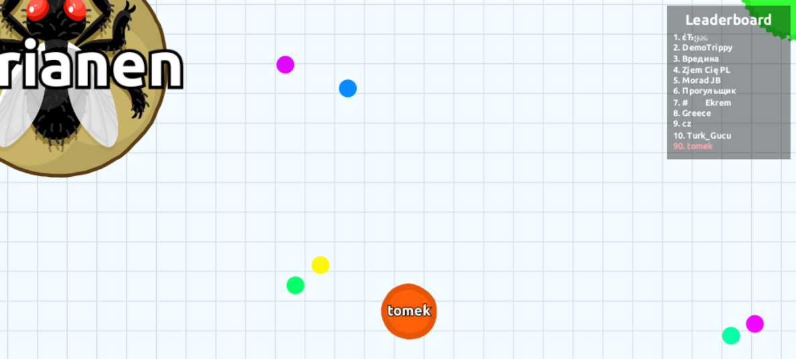
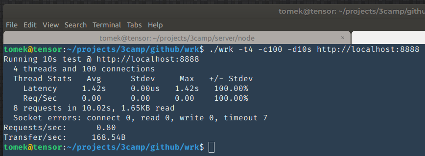
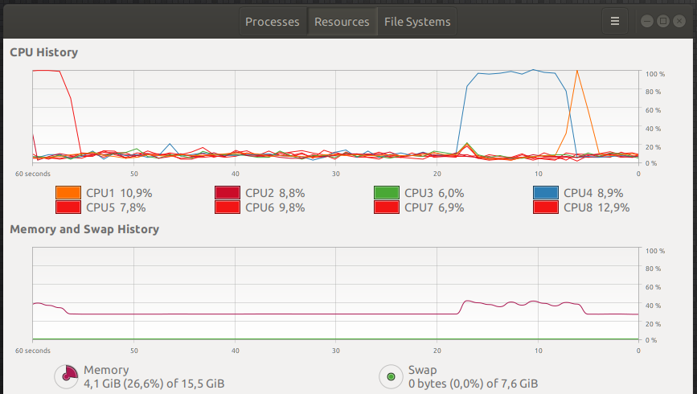
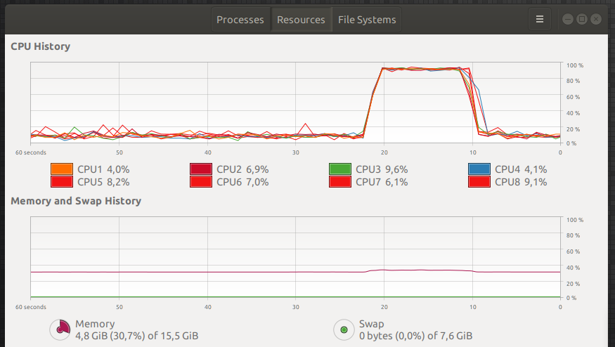
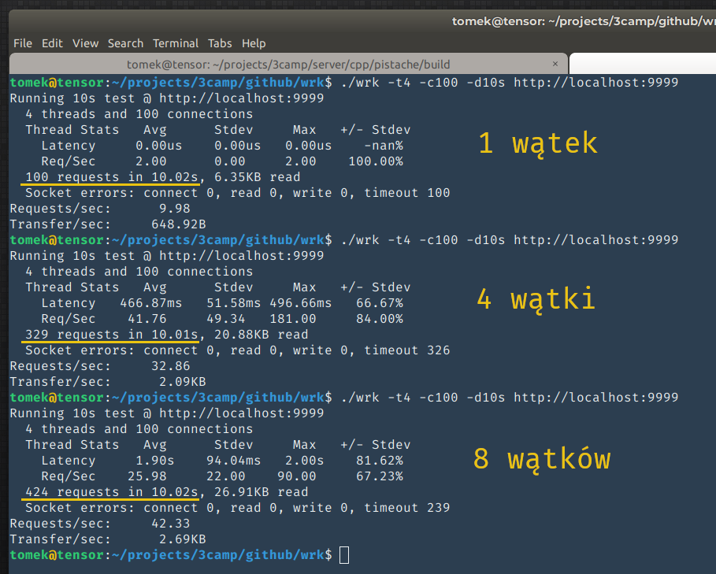

na backendzie
 ONNX
ONNX
tomasz-dolbniak tomdol
O czym to będzie?
Doświadczenia
Narzędzia
Abstrakcje
Materiały
Jak się robi backend?
W WERSJI MINIMALNEJ
minimum zależności - bardzo niski poziom abstrakcji
Model OSI - warstwa IV
Sockety
Backend na socketach
int server_socket = socket(AF_INET, SOCK_STREAM, 0);
sockaddr addr = { /* IP + port */ };
bind(server_socket, &addr);
listen(server_socket);
int connection_socket = accept(server_socket, &addr);
char buffer[1024] = {0};
// read(int fd, void *buf, size_t count);
read(connection_socket, buffer, 1024);
// write(int fd, const void *buf, size_t count);
write(connection_socket, "Hello world", 11);
Backend na bazie HTTP
Model OSI - warstwa VII
Wymaga niezawodności (reliability)
HTTP bazuje na TCP (warstwa IV)
Request HTTP
POST /login HTTP/1.1
Host: google.com
User-Agent: Mozilla/5.0 Gecko/20100101 Firefox/70.0
Accept: text/html
Accept-Language: en-US,en;q=0.5
Content-Length: 37
{
login: "admin",
password: "admin"
}
Backend na bazie HTTP
std::string request = "POST /login HTTP/1.1\nHost: (...)";
write(socket, request.c_str(), request.length());
REST
Bazuje na HTTP
"Architectural style"
Wymiana JSONów po HTTP
REST vs RESTful
tiny.cc/backendy
www.surveymonkey.com/r/RYS68VC
wynikiTypowe narzędzia do backendów REST
- node.js
- Java
- C# + .NET
- Python + Django
Asynchroniczność
std::futurestd::async()std::promiseWciąż brak
.then().then().then()Boost.Asio
- Async network & low level I/O
- Asynchroniczność na jednym wątku => proactor
- Nie trzeba synchronizować wątków
- Można podpiąć pulę wątków - skalowalność
- Obsługa coroutines
- TCP, SSL, timery, porty szeregowe
Boost.Asio
Kluczowe elementy
- Wzorzec proactor
- asio::io_service
- asio::io_service::strand
- buffers
JSON
nlohmann/jsonTencent/rapidjson
72ms vs 8ms
nlohmann/json
json obj = {
{"pi", 3.141},
{"happy", true},
{"name", "Niels"},
{"nothing", nullptr},
{"answer", {
{"everything", 42}
}},
{"list", {1, 0, 2}},
{"object", {
{"curr", "USD"},
{"value", 42.99}
}}
};
auto j = json::parse("...");
std::string s = j.dump();
std::cout << j.dump(4) << std::endl;
std::ifstream i("in.json");
i >> j;
std::ofstream o("out.json");
o << j;
RapidJSON
const char* json = "{\"project\":\"rapidjson\",\"stars\":10}";
Document d;
d.Parse(json);
Value& s = d["stars"];
s.SetInt(s.GetInt() + 1);
StringBuffer buffer;
Writer<StringBuffer> writer(buffer);
d.Accept(writer);
std::cout << buffer.GetString() << std::endl;Boost.Beast
boostorg/beastVinnie Falco
Boost.Beast
- HTTP protocol level library
- Abstrakcja protokołu HTTP - typy/klasy
- message, headers, body, request, response, strumienie, bufory
- Biblioteka helperów - read, write, parse, ...
- WebSockets
Klient
http::request<empty_body> req;
req.version(11); // HTTP/1.1
req.method(verb::get);
req.target("/index.htm");
req.set(field::accept, "text/html");
req.set(field::user_agent, "Beast");
http::write(socket, req);Serwer
response<string_body> res;
res.version(11); // HTTP/1.1
res.result(status::ok);
res.set(field::server, "Beast");
res.body() = "Hello, world!";
res.prepare_payload();
http::async_write(socket, res, done_callback);Wyższy poziom
- Routing
- Standardowe nagłówki
- Kontrolowany load balancing
- Walidacja danych
Wyższy poziom w C++
- pistache
- restinio
- cpprestsdk
- crow
- pion
restinio - router
restinio::router::express_router_t<> router{};
router.http_get("/single/:param", []( auto req, auto params) {
return
init_resp(req->create_response())
.set_body(
fmt::format(
"GET request with single parameter: '{}'",
params["param"]))
.done();
});
restinio
restinio::run(
restinio::on_this_thread< traits_t >()
.address( "localhost" )
.request_handler( router ) // <- tu jest
.read_next_http_message_timelimit( 10s )
.write_http_response_timelimit( 1s )
.handle_request_timeout( 1s ) );
Gotowy serwer

CGI
- Wielojęzykowy protokół
- HTTP, routing, SSL - w serwerze
- Aplikacje konsolowe / skrypty
- stdin + stdout
- nagłówki i ścieżka -> ENV
- 1 zapytanie -> 1 proces
FastCGI
- Procesy - workery
- Dużo lżejsze
- API w stylu C
- Przypomina backend na socketach
Wnioski
- Nie pisać backendu w C++
- Dokładnie określić wymagania
- Zrobić POC - minimum 2
- Porównać technologie
- Zmierzyć
- Wyestymować rozwiązania
Kiedy rozważyć C++?
- Wydajność
- Rozmiar
- Platforma
- Dostęp do sterowników, bibliotek, sytemu...
Mieć ciastko i zjeść ciastko?
- C++ bindings
- "Wystawić" kod C++ do innego języka
- "Critical path" w C++
- node.js -> N-API
- Java -> JNI
- Python -> pybind11
Przykłady
Nie tylko REST
WebSockets
Kiedy i po co?
- Realtime apps
- Low latency
- Full duplex
- Persistent connection
agar.io
 news.ycombinator.com/item?id=9462967uWS
uNetworking/uWebSockets
Protocol Buffers
Protocol buffers are a flexible, efficient, automated mechanism for serializing structured data – think XML, but smaller, faster, and simpler.https://developers.google.com/protocol-buffers/docs/overview
Protobuf message
message Person {
required string name = 1;
required int32 id = 2;
optional string email = 3;
}
- Czytelne
- Proste
- Uniwersalne
Uniwersalność
.proto -> C++
protoc person.proto --cpp_out=...
Person kowalski;
std::ifstream input("zapisany_kowalski.bin", std::ios::binary);
kowalski.ParseFromIstream(&input);
std::cout << kowalski.email();
kowalski.set_id(5);
std::ofstream out("kowalski_the_5th.bin", std::ios::binary);
kowalski.SerializeToOstream(&out);
protobuf + gRPC
message Person {
required string name = 1;
required int32 id = 2;
optional string email = 3;
}
message Request {
required int32 id = 1;
}
service People {
rpc GetPerson (Request) returns (Person) {}
}
Komunikacja gRPC

OpenVINO™
IntelAI/OpenVINO-model-serverProtobuf vs JSON
 https://auth0.com/blog/beating-json-performance-with-protobuf
https://auth0.com/blog/beating-json-performance-with-protobuf
nGraph


C++ w chmurze
C++ AWS SDK
- Od listopada 2018
- Bardzo szybkie lambdy (serverless)
- C++ API do DynamoDB
- Wysyłanie emaili i SMS z C++
- Obsługa plików w S3
- Zarządzanie instancjami EC2
- aws/aws-sdk-cpp
aws.amazon.com/blogs/compute/introducing-the-c-lambda-runtime
AWS Lambda w C++
awslabs/aws-lambda-cpp- Boilerplate
- Przykłady
- Buildsystem
- Testy
AWS Lambda w C++
#include <aws/lambda-runtime/runtime.h>
using handler_t =
std::function<invocation_response(const invocation_request&)>;
int main()
{
run_handler(/* handler_t handler */);
return 0;
}
AWS Lambda handler
#include <aws/lambda-runtime/runtime.h>
using namespace aws::lambda_runtime;
invocation_response
lambda_request_handler(const invocation_request& req)
{
// req.payload -> std::string
if (req.payload.empty())
return invocation_response::failure("request payload empty",
"error_type");
else
return invocation_response::success("{ ... JSON ... }",
"application/json");
}
node.js vs c++
tomdol/3camp/tree/master/live_demoWyjaśnienie
Pomimo, że node.js jest świetnym narzędziem i bardzo dobrze nadaje się do pisania większości backendów, kiepsko radzi sobie w przypadku operacji CPU-intensive.
Niestety w przypadku operacji zajmujących dużo czasu, event loop blokuje się i napisany w ten sposób backend przestaje odpowiadać.
C++ nadaje się do tego dużo lepiej i nawet w przypadku uruchomienia serwera C++ na jednym wątku, osiągamy znaczne przyspieszenie i dużo większą przepustowość.
Program testowy
2 programy testowe, które znajdują się w tym repozytorium symulują operację wymagającą sporej ilości obliczeń.
Oba robią to samo - wczytują obrazek z dysku (12MB plik bmp) i w sposób bardzo naiwny próbują go przeskalować kopiując bajt po bajcie wczytany obrazek N-razy, gdzie N oznacza skalę.
Każdy request GET do takiego backendu uruchamia skalowanie. Serwer po zakończeniu zwraca ilość bajtów obrazka po przeskalowaniu.
Testowanie i pomiary
wg/wrkOba serwery były testowane przez 10 sekund z użyciem 4 wątków i 100 połączeń symulowanych przez narzędzie wrk
wrk -t4 -c100 -d10s http://localhost:8888 -> node.js
wrk -t4 -c100 -d10s http://localhost:9999 -> C++
node.js

C++
1 vs 4 vs 8

C++
Mały komentarz
node.js był w stanie obsłużyć 8 żądań w ciągu całego testu, co daje przepustowość mniejszą niż 1 reqest na sekundę
Nawet przy użyciu pojedynczego wątku po stronie backendu w C++ udało się osiągnąć przyspieszenie ponad 12x
Uruchomienie z 4 i 8 wątkami daje kolejne przyrosty, ale pokazuje jednocześnie, że Prawo Amdahla działa i że przyspieszenie nie rośnie liniowo wraz ze wzrostem ilości wątków.
Ponadto zużycie pamięci w przypadku node.js jest znacznie większe, co może wykluczać jego zastosowanie w sytuacjach, gdy dostępnego RAMu jest mało.
Materiały
YouTube
- code::dive
- CppCon
- Meeting Cpp
Do czytania
- cpp-polska.pl
- bfilipek.com
- akrzemi1.wordpress.com
- fluentcpp.com
- modernescpp.com
- isocpp.org
- reddit.com/r/cpp